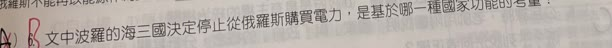
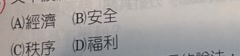
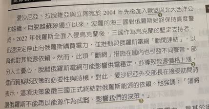

分享原卷｜第6題
完整原題
作答所需文章／材料
【波羅的海三國實現能源獨立】 愛沙尼亞、拉脫維亞與立陶宛於2004年先後加入歐盟與北大西洋公約組織。自脫離蘇聯獨立以來，波羅的海三國對俄羅斯始終保持高度警戒。2022年俄羅斯全面入侵烏克蘭後，三國作為烏克蘭的堅定支持者，迅速決定停止向俄羅斯購買電力，並推動與俄羅斯電網「斷開連結」，以降低對其能源依賴。然而，此項「斷網」措施在國內也引發不同聲音。部分人士憂心，脫離俄羅斯電網可能影響供電穩定，並導致能源價格上漲，進而質疑該政策的必要性與時機。對此，愛沙尼亞外交部長在接受訪問時表示，這項決策象徵三國正式終結對俄羅斯能源的依賴。他強調：「這將讓俄羅斯不能再以能源作為武器，影響我們的決策。」文中波羅的海三國決定停止從俄羅斯購買電力，是基於哪一種國家功能的考量？
(A) 經濟
(B) 安全
(C) 秩序
(D) 福利
先想一想，再查看答案、解說與原圖
原卷作答：A（原卷紅筆改B）
本題預期：(B) 安全。
逐項解析
| 選項與原句 | 判讀 | 句意與判斷理由 |
|---|---|---|
| (A) 經濟 | 不選 | 材料提及可能承受經濟代價，決策主要目的不是降低電價。 |
| (B) 安全 | 應選 | 擺脫能源脅迫及對外依賴，對應國家安全。 |
| (C) 秩序 | 不選 | 這裡不是在說國內日常治安或秩序管理。 |
| (D) 福利 | 不選 | 此處不是提供福利保障或照顧弱勢的制度。 |
詳細說明與解題步驟
關鍵在最後一句：不讓俄羅斯再以能源作為武器，影響三國的決策。降低能源依賴、避免被外國脅迫，重點是國家安全，選B。
電力本身涉及經濟，但材料甚至提到價格上漲與供電穩定的疑慮；不能只由商品名稱就判斷決策目的。秩序偏向國內治安及法律運作，福利偏向社會照顧，均不是此處對外能源風險的主要考量。
核對註記：依完整原卷文章／表格與四選項核對；依本題國中教材作權利分類，法律名稱與法規位階另查官方條文；保留原文時事數字與時點，不代換成最新新聞。
原圖（僅本題）


